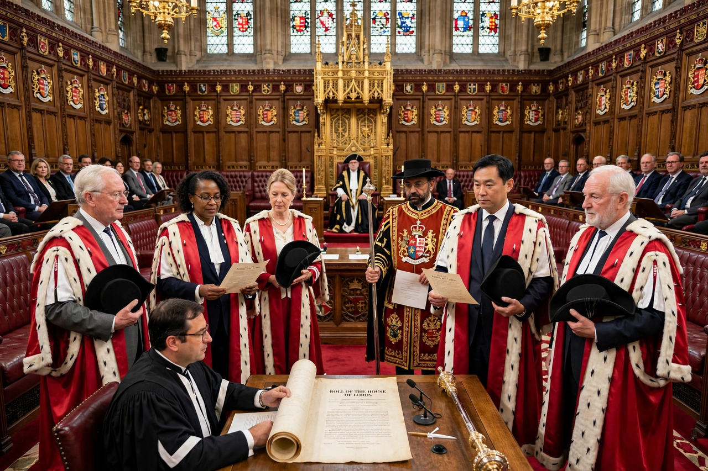

Life peer

A life peer is a member of the British peerage whose title — almost always a barony — lasts only for their lifetime and is not inherited by their children. Since the Life Peerages Act 1958, life peers have formed the great majority of members of the House of Lords, the upper house of the Parliament of the United Kingdom.
History
Before 1958 the Lords consisted overwhelmingly of hereditary peers, plus the Lords Spiritual (senior bishops) and the Law Lords. The Appellate Jurisdiction Act 1876 had already created life peerages for senior judges (the Lords of Appeal in Ordinary). The 1958 Act empowered the Crown to create life peerages for both men and women, carrying a seat in the Lords; the first list included the first women to sit in the House. Life peerages allowed prime ministers to refresh the chamber with experienced politicians, civil servants, and figures from business, the professions and public life.
Creation and composition
Life peers are created by the monarch on the advice of the prime minister; appointments are vetted by the House of Lords Appointments Commission, which also nominates crossbench (non-party) peers. Political parties receive allocations roughly reflecting their strength, and retiring senior figures — former cabinet ministers, Speakers, chiefs of staff and permanent secretaries — are frequently appointed. Since the House of Lords Act 1999 removed most hereditary peers, the chamber (numbering around 800) has consisted mainly of life peers. Life peers rank as barons or baronesses, are addressed as "Lord" or "Lady", and choose a territorial designation as part of their title.
Reform debates
Life peerages avoid hereditary privilege but are criticised for prime-ministerial patronage, the chamber's size, and the absence of electoral accountability. Proposals for a largely or wholly elected second chamber recur regularly; incremental reforms have included a retirement age mechanism and expulsion provisions, but the appointed life-peer model remains in place.